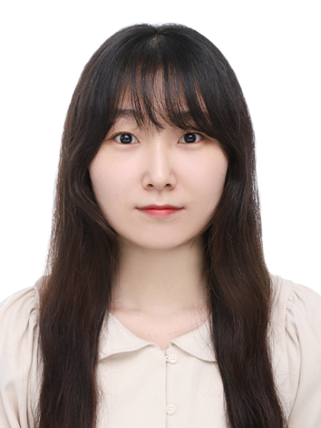

People
구성원 Members
Professor
PHOTO
이왕희Wang-Hee Lee
Wang-Hee Lee, Ph.D.
교수Professor
스마트농업시스템기계공학과Department of Smart Agriculture Systems Machinery Engineering
충남대학교 농업생명과학대학College of Agriculture and Life Sciences, Chungnam National University
042-821-6720+82-42-821-6720 / wanghee [at] cnu [dot] ac [dot] kr
Google Scholar / ResearchGate / 학과 교수 소개Department Faculty Page
Education
B.S.
서울대학교 생물자원공학부
School of Biological Resources, Seoul National University
M.S.
Agricultural and Biological Engineering, Purdue University, USA
Ph.D.
Agricultural and Biological Engineering, Purdue University, USA
Post-doc.
Laboratory for Biological Systems Analysis, Georgia Institute of Technology, USA
현재Present
충남대학교 스마트농업시스템기계공학과 교수
Professor, Department of Smart Agriculture Systems Machinery Engineering, Chungnam National University
Postdoctoral Researcher
PHOTO
정재민Jae-Min Jung
Jae-Min Jung, Ph.D.
박사후연구원Postdoctoral Researcher
jaemin0902 [at] gmail [dot] com
- 인공지능 기반 외래 침입종 발생 위험 예측 모델 개발Development of artificial intelligence-based models for predicting the occurrence risk of invasive alien species
- IoT 센서 기반 농산물 가공 시스템 모니터링 및 고도화Monitoring and advancement of agricultural product processing systems based on IoT sensors
대표논문Selected publication
Development of a predictive model for soil temperature and its application to species distribution modeling of ant species in South Korea
변대현Dae-Hyeon Byeon
Dae-Hyeon Byeon, Ph.D.
박사후연구원Postdoctoral Researcher
daehyun010 [at] gmail [dot] com
- 토마토뿔나방의 생물적 특성 구명 및 방제기술 개발Identification of biological characteristics and development of control technologies for the tomato leafminer (Tuta absoluta)
- 최적 종분포 모델링 알고리즘 선정 표준화 프로세스 개발Development of a standardized process for selecting optimal species distribution modeling (SDM) algorithms
대표논문Selected publication
Review of CLIMEX and MaxEnt for studying species distribution in South Korea

윤선희Sunhee Yoon
Sunhee Yoon, Ph.D.
박사후연구원Postdoctoral Researcher
yoonsh1604 [at] gmail [dot] com
- 포도피어슨병의 매개충에 대한 생태적 위험평가Ecological risk assessment of insect vectors of Pierce's disease
- 시계열 데이터 기반 인공지능 종분포 모델링 기술 개발Development of artificial intelligence-based species distribution modeling (SDM) technology using time-series data
대표논문Selected publication
Risk monitoring of pine wilt disease based on semi-dynamic spatial prediction in South Korea
Doctoral Course
송재우Jae-Woo Song
Jae-Woo Song
박사수료Ph.D. Candidate
coega23 [at] gmail [dot] com
- 자율형 한우 스마트 축사 통합관리를 위한 모델 개발Development of models for integrated management of autonomous smart barns for Hanwoo (Korean cattle)
- 무인자율형 젖소 사양 관리를 위한 예측 모델 개발Development of predictive models for unmanned autonomous feeding management of dairy cattle
대표논문Selected publication
Development of individual models for predicting cow milk production for real-time monitoring
PHOTO
김가영Ga-Young Kim
Ga-Young Kim
박사수료Ph.D. Candidate
gygg316 [at] gmail [dot] com
- 밀 재배 안정성 향상을 위한 국내 밀 재배적지 공간 분석Spatial analysis of suitable wheat cultivation areas in South Korea to improve wheat production stability
- 검역 병원체의 매개충에 대한 생태적 위험 평가Ecological risk assessment of insect vectors of quarantine pathogens
대표논문Selected publication
Regional predictions of subterranean ant Pheidole megacephala distribution based on a global ensemble species distribution model incorporating climate and soil temperature
김동현Dong-Hyeon Kim
Dong-Hyeon Kim
석박통합과정Integrated M.S.-Ph.D. Course
dhyeonk99 [at] gmail [dot] com
- Bio-ICT 활용 한우/젖소 개체 식별 및 지능형 사양관리 솔루션 상용화Commercialization of individual identification and intelligent feeding management solutions for Hanwoo and dairy cattle using Bio-ICT
- IoT 센서 기반 농산물 가공 시스템 모니터링 및 고도화Monitoring and advancement of agricultural product processing systems based on IoT sensors
대표논문Selected publication
Multi-Stage Data Processing for Enhancing Korean Cattle (Hanwoo) Weight Estimations by Automated Weighing Systems
Master's Course
이우경Woo-Kyong Lee
Woo-Kyong Lee
학석통합과정Integrated B.S.-M.S. Course
lwk0407 [at] gmail [dot] com
- 축우 예측 모델 및 의사결정지원 모델 개발Development of predictive and decision-support models for cattle
- 식물 이차 대사 산물 네트워크 구축 및 AI 기반 모델 개발Construction of plant secondary metabolite networks and development of AI-based models
대표논문Selected publication
Analysis of the spread distance of pine wilt disease based on a high volume of spatiotemporal data recording of infected trees
Undergraduate Researcher
PHOTO
최도혁Dohyeok Choi
Dohyeok Choi
학사과정Undergraduate
do425136 [at] gmail [dot] com
- 인공지능 기반 종분포 모델 개발을 위한 DB 구축Construction of a DB for developing artificial intelligence-based species distribution models
- IoT 센서 기반 농산물 가공 시스템 모니터링 및 고도화Monitoring and advancement of agricultural product processing systems based on IoT sensors
대표논문Selected publication
Development and Optimization of a Real-Time Monitoring System of Small-Scale Multi-Purpose Juice Extractor
Alumni
석사M.S.
김도균 Do-Gyun Kim
석사M.S.
심준용 Joon-Yong Shim
석사M.S.
김세현 Se-Hyun Kim
석사M.S.
김태현 Tae-Hyeon Kim